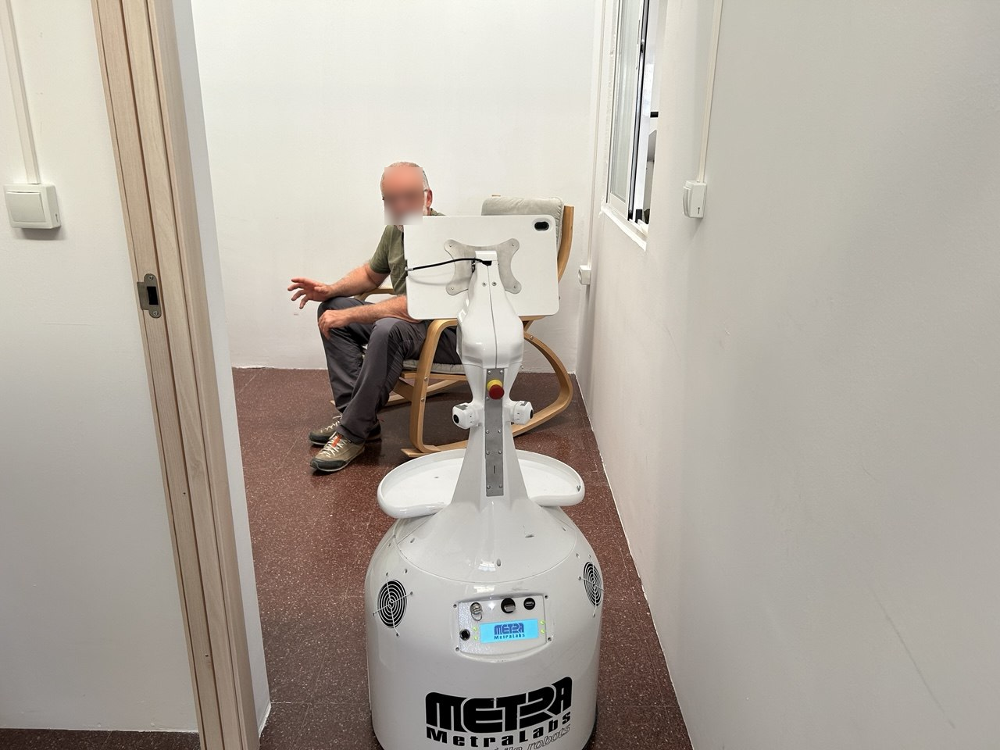
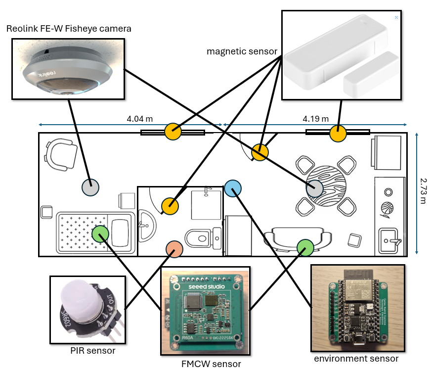
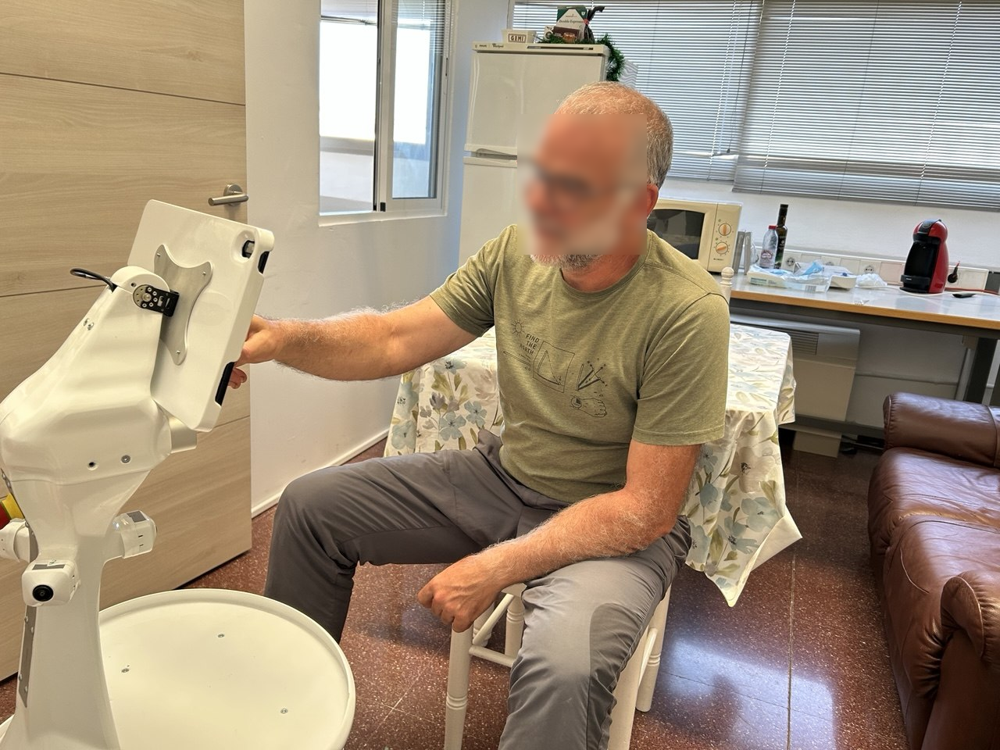
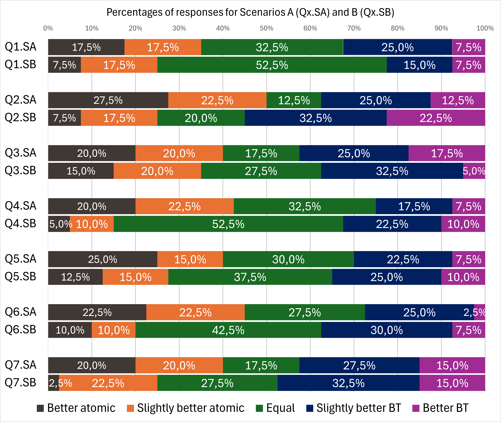

Abstract
Ambient Assisted Living (AAL) environments aim to enable older people to remain active and lead an autonomous and independent life for as long as possible. Among the technologies that can be incorporated into these settings, socially assistive robots (SAR) seek to establish a more natural and intuitive means of interaction with people, whilst helping them to carry out everyday tasks. One of the main challenges facing the design of these robots is how to enable them to undertake more complex tasks. Recent advances in Large Language Models (LLMs) have opened new avenues for flexible robot deliberation, yet their integration into real-time robotic systems remains challenging due to latency constraints, reasoning reliability, and the complexity of coordinating multi-step tasks. This paper proposes a hierarchical multi-agent architecture for robot deliberation that addresses these challenges by combining LLM-based planning with structured execution mechanisms within the ROS 2 ecosystem. The proposed architecture employs a supervisor agent that decomposes high-level natural language instructions into prioritised subtasks, enabling a priority-driven execution model that dynamically adapts to task relevance, temporal constraints, and environmental feedback. Subtasks are delegated to a set of Single-Purpose Agents (SPAs), orchestrated via LangGraph state machines and coordinated through a priority-aware scheduling mechanism. A key design principle is the use of Behaviour Trees (BTs) as high-level callable tools through the Model Context Protocol (MCP), encapsulating closed-loop control strategies while enabling preemptive and priority-consistent execution. This reduces the number of LLM inference steps required per task and improves robustness under dynamic conditions. A further contribution concerns the deployment of fine-tuned, lightweight LLMs—on the order of 0.6 billion parameters—specifically adapted for both the supervisor and the individual SPA roles through parameter-efficient low-rank adaptation (LoRA). These models are trained on role-specific tool-calling datasets to specialise in constrained reasoning patterns and task-specific decision-making, enabling efficient, low-latency inference directly on edge hardware. The combination of fine-tuning and hierarchical priority control enhances both the determinism and responsiveness of the system while mitigating error propagation across agent interactions. The paper presents the full software architecture, a formal characterisation of the system as a priority-aware hierarchical policy over a graph of agent workflows, and an experimental evaluation in an Ambient Assisted Living scenario assessing task success rate, inference efficiency, responsiveness under competing priorities, and overall user experience. Because SPA execution is decoupled from the supervisor's own reasoning loop, the architecture is designed to keep accepting, processing, and queuing new user queries while previously dispatched SPAs are still executing their tasks.
Overview
Socially assistive robots can help older adults stay independent for longer, but giving them the flexibility to handle open-ended, natural-language requests without sacrificing real-time reliability remains an open problem. This work addresses that gap with a hierarchical multi-agent architecture in which an LLM reasons about what to do, while structured, priority-aware execution mechanisms guarantee how and when it gets done safely inside ROS 2.
Priority-driven supervision
A supervisor agent decomposes natural-language instructions into prioritised subtasks that adapt to relevance, deadlines and environmental feedback, queuing new requests while others are still running.
Single-Purpose Agents
Subtasks are delegated to Single-Purpose Agents orchestrated as LangGraph state machines and coordinated through a priority-aware scheduler, each focused on one well-defined role.
Behaviour Trees as MCP tools
Behaviour Trees are exposed as high-level callable tools through the Model Context Protocol, encapsulating closed-loop control and enabling preemptive, priority-consistent execution with fewer LLM calls per task.
Fine-tuned edge LLMs
Lightweight ~0.6B-parameter models are LoRA fine-tuned for the supervisor and each SPA role on role-specific tool-calling data, enabling efficient, low-latency inference directly on edge hardware.
How It Works
- Query intake. A user or another system sends a natural-language request to the CallAgent ROS 2 service.
- Decomposition & prioritisation. The Supervisor Manager breaks the request into subtasks, assigns them a priority, and creates an agent for each one, moving it through a pending → running → finished lifecycle.
- Focused execution. Each Single-Purpose Agent reasons with its fine-tuned edge LLM and calls Behaviour Trees exposed as MCP tools to carry out closed-loop control, preempting or yielding depending on priority.
- Continuous operation. Outcomes and priority updates flow back to the supervisor, which keeps accepting and queuing new queries while previously dispatched agents are still executing theirs.

The robot executing a dispatched task in the real Ambient Assisted Living apartment.
Results
The architecture was deployed on a real socially assistive robot and evaluated in an instrumented Ambient Assisted Living testbed, combining vision, presence and environmental sensing. The experimental campaign assessed task success rate, inference efficiency of the fine-tuned edge LLMs, responsiveness under competing priorities, and overall user experience through a user study comparing the Behaviour-Tree-based execution against atomic tool calling.

Ambient Assisted Living testbed used for the experimental evaluation, instrumented with fisheye camera, magnetic, PIR, FMCW and environmental sensors.

Real-world deployment of the socially assistive robot during the Ambient Assisted Living user study.

User study results: perceived performance of the Behaviour Tree-based execution versus atomic tool calling across scenarios.
Video Presentation
BibTeX
@article{Tudela2026Priority,
title={Priority-Driven Hierarchical Multi-Agent Systems with Fine-Tuned LLMs},
author={Tudela, Alberto and Pons, {\'O}scar and Galeas, Jos{\'e} and Bandera, Juan Pedro and Bandera, Antonio},
journal={Applied Sciences},
volume={16},
number={16},
pages={8250},
year={2026},
publisher={MDPI},
doi={10.3390/app16168250},
url={https://www.mdpi.com/2076-3417/16/16/8250}
}